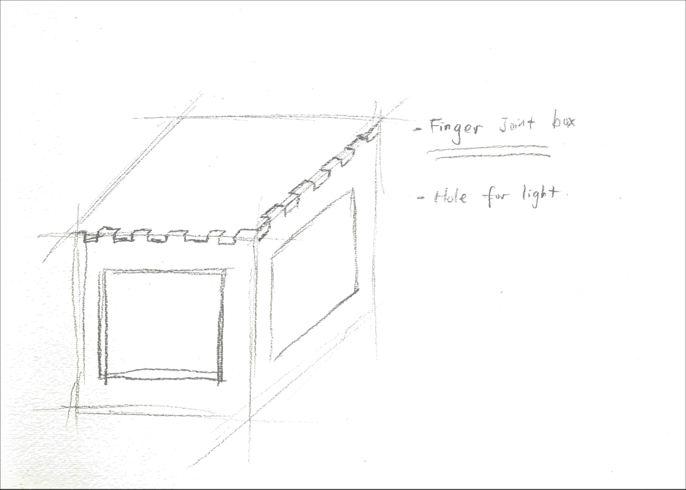

This is a SolidWorks model of the box, and how users can slide in different artboards over the sides to modify the light intensity, color and even the patterns.

This is the initial design process of creating a lighting system that involves creativity and interactions.
I want each of the lights in this system a cubic shape, and is able to stack together like LEGOs to create 3D artworks. I also wanted users to be able to choose whatever color and pattern they want for the light.
This is a SolidWorks model of the box, and how users can slide in different artboards over the sides to modify the light intensity, color and even the patterns.
The sketch model of each cube is made of 1/8" wood borads using laser-cutting.